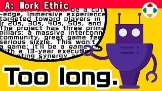
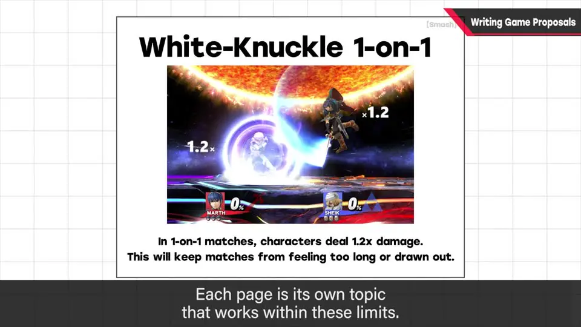
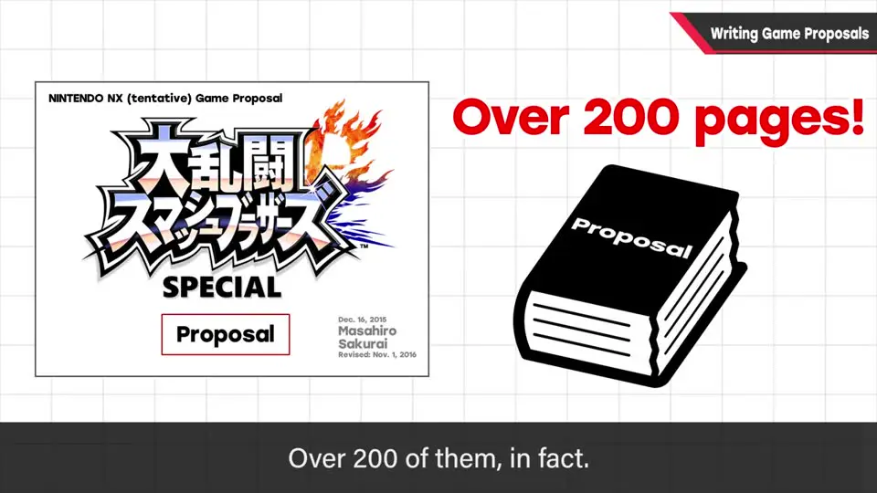
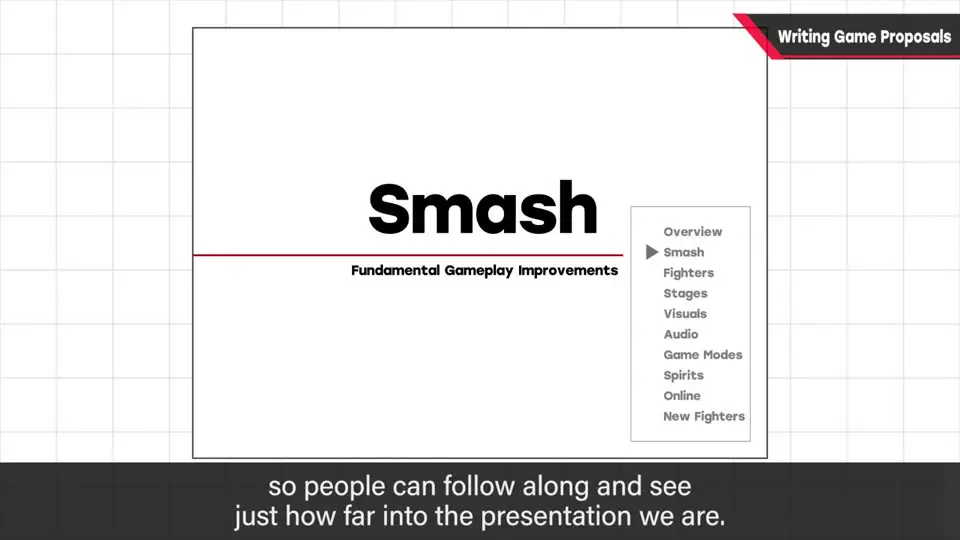
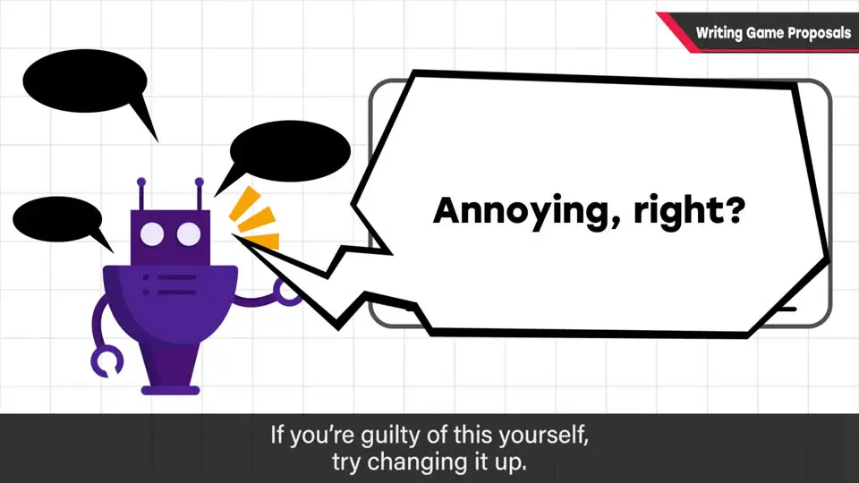

速览
樱井展示了他近年写企划书的格式，以《大乱斗 SPECIAL》的企划书为例：用 PowerPoint 制作，几乎每页都是一张照片或图 + 两行文字，一页只讲一个说明项。页数很多，超过 200 页，但读起来像翻漫画一样快，演示也不花太多时间。「企划书越薄越好」不一定对：关键是好懂、有趣、内容妥当，与页数无关。页面有大类/小类目录，让人知道进度；演示时不照读文字。一眼看懂很重要，但最重要的还是写了什么。
1. 樱井企划书的格式：一页一图 + 两行字 0:00
这期本属于「企划/游戏设计」类话题，但可以应用到很多场合。樱井在可公开的范围内展示了他近年写企划书的格式（他提醒：不同团队或公司可能会对这种文化差异感到吃惊）。

- 示例是《任天堂明星大乱斗 特别版（SPECIAL）》的企划书，用 PowerPoint 制作。
- 几乎每页都是：1 张照片或图 + 2 行文字，1 页只讲 1 个说明项。
- 页数很多：超过 200 页。但读起来像翻漫画一样「啪啪」翻过，做演示也不花太多时间。
- 为了直接落实到规格里，也包含一些「团队知道就好」的细节内容。
2. 页数不是问题，别照读文字 1:20



- 常有人说「企划书越薄越好」，但不一定。关键是：好不好懂、有没有趣、内容是否妥当，能否快速听完一场有密度的演示——跟页数无关。（他自嘲：大乱斗内容量太大，这也没办法。）
- 有大类和小类，让人知道整体进度——没有终点的演示很痛苦。
- 他从独立（freelance）时起就用这种格式。实际演示时他会边讲边放，但不照读文字；画面上长长一段字然后照着念，会让人烦躁（观众会先读完）。如果你这么做，请改掉。
- 从「一眼看懂」的角度，推荐这种手法；但最重要的还是里面写了什么。
自测题
1. 樱井的企划书每页长什么样？总页数多少？
用 PowerPoint，几乎每页「1 张图/照片 + 2 行文字」，1 页 1 个说明项；《大乱斗 SPECIAL》的企划书超过 200 页。 0:33
2. 为什么页数多也没关系？
读起来像翻漫画一样快，演示也不花太多时间；关键在于好懂、有趣、内容妥当，能快速听完一场有密度的演示，与页数无关。 1:20
3. 演示企划书时，樱井反对什么做法？
在画面上放长长一段文字然后照着念——观众会先读完，让人烦躁。如果这么做，请改掉。 2:05